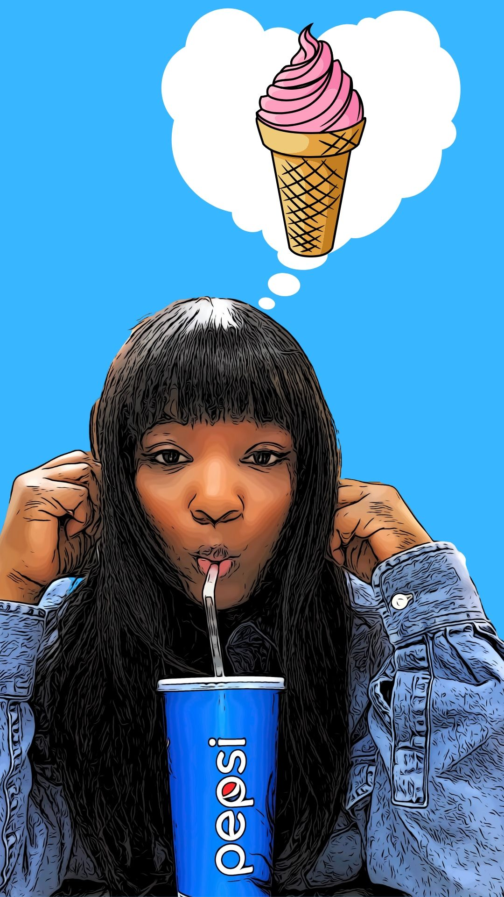

I'm waiting for dinner but I'm thinking about dessert!
Questions and Answers
Personal Background-I'm originally from Brooklyn, NYC. I've been living in Charlotte for 3 years now. I am a full time mom, a full time student and I'm that person that takes pics of my food before I eat it.
Professional Background-I am trying to break into the tech field but in the meantime I work at a fufillment center. This has been my job for the past 3 years.
Academic Background-I graduated from high school several years ago but I started at CPCC in the fall of 2019
Courses I am taking and why-
Web110
I am taking several courses in the IT category so that I can break into the tech field and look for jobs such as web developer, web designer and other jobs in this field.
Something To Remember Me By- I love food and art. They are my passion!